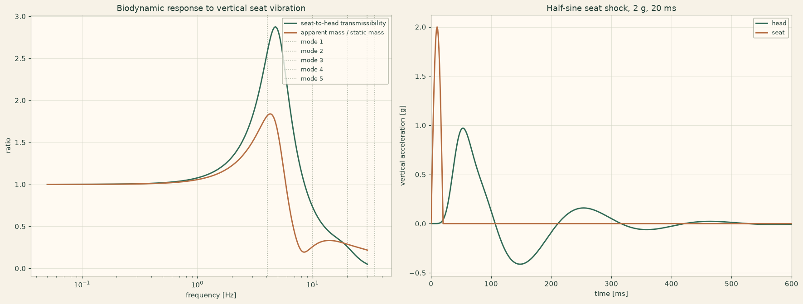

Docs › Examples › Lumped model of a seated human body
Biodynamics · 0D
Lumped model of a seated human body
Pelvis, abdomen, thorax, upper torso and head of a seated person form a five-degree-of-freedom chain of masses, springs and dampers on a vibrating seat.
Run locally with OneSimulation. The example downloads are free. Running them requires an activated runtime. Runtime Alpha 0.2.1a7 · CPython 3.13 on macOS (Apple Silicon), Ubuntu 22.04 (x86-64), and Windows x64. Installation and activation · View pilot plans. Scope of the reference checks.


What it computes
OneSimulation assembles the network, solves the natural modes, the seat-to-head transmissibility and the apparent mass over 0.05-30 Hz, and the transient response to a half-sine seat shock.
What it checks
At 0.05 Hz the transmissibility is 1.0002 and the apparent mass 76.81 kg against the total mass 76.8 kg; the whole-body resonance lies at 4.3 Hz (apparent mass 1.84 times static); input and dissipated power agree in every harmonic state, and after the shock all segments move with the seat's velocity change 0.2498 m/s.
The notebook
The complete notebook, cell by cell. Run it to produce the figures and the comparison printout.
How a seated person responds to vertical vibration of the seat, in a vehicle, a helicopter or on a construction machine, is described by biodynamic models: the body segments are masses, the tissues between them springs and dampers. Two measures characterise such a model. The seat-to-head transmissibility \(T(f)=a_\text{head}/a_\text{seat}\) tells how much of the seat motion arrives at the head; the apparent mass \(M(f)=F_\text{seat}/a_\text{seat}\) is the dynamic mass the seat feels. Both show the well-known whole-body resonance near 4-6 Hz (Griffin, Handbook of Human Vibration, Academic Press 1990).
Setup. A chain from the seat upwards (masses in kg, stiffness in kN/m, damping in N s/m):
| segment | mass | connection below | stiffness | damping |
|---|---|---|---|---|
| pelvis | 36.0 | seat | 75 | 3500 |
| abdomen | 5.5 | pelvis | 100 | 330 |
| thorax | 15.0 | abdomen | 120 | 800 |
| upper torso | 15.0 | thorax | 150 | 900 |
| head and neck | 5.3 | upper torso | 120 | 400 |
The seat moves vertically, harmonically or as a half-sine shock of 2 g and 20 ms.
Reference. (1) For \(f\to0\) the body moves rigidly with the seat: \(T\to1\) and \(M\to\sum m_i\) (Newton's second law for the whole body). (2) In every harmonic state the mean power the seat puts into the body equals the power dissipated in the dampers. (3) A shock of velocity change \(\Delta v\) leaves every segment, once the vibration has decayed, moving with the seat.
import numpy as np
from onesim.physics.solid_mechanics import Damper, LumpedMechanicalNetwork, Spring
from onesim.visualization import plots, theme
theme.set()Model
Five coordinates and one input, the seat height; each element connects a segment to the one below.
segments = {
"pelvis": 36.0,
"abdomen": 5.5,
"thorax": 15.0,
"upper torso": 15.0,
"head": 5.3,
}
below = {
"pelvis": "seat",
"abdomen": "pelvis",
"thorax": "abdomen",
"upper torso": "thorax",
"head": "upper torso",
}
stiffness = {
"pelvis": 75e3,
"abdomen": 100e3,
"thorax": 120e3,
"upper torso": 150e3,
"head": 120e3,
}
damping = {
"pelvis": 3500.0,
"abdomen": 330.0,
"thorax": 800.0,
"upper torso": 900.0,
"head": 400.0,
}
body = LumpedMechanicalNetwork(
inertias=segments,
springs=tuple(Spring(stiffness[name], name, below[name]) for name in segments),
dampers=tuple(Damper(damping[name], name, below[name]) for name in segments),
inputs=("seat",),
)Natural modes, transmissibility and apparent mass
The response to a unit seat displacement gives both measures: \(T=X_\text{head}\), and the seat force is the sum of the segment inertia forces, \(F=-\omega^2\sum m_iX_i\), so \(M=\sum m_iX_i\) for a unit seat acceleration \(-\omega^2\).
modes = body.modes()
for k, frequency in enumerate(modes.frequencies):
shape = modes.shape(k)
print(
f"mode {k + 1}: {frequency:6.2f} Hz, largest motion in the {max(shape, key=lambda name: abs(shape[name]))}"
)
frequencies = np.geomspace(0.05, 30.0, 500)
response = body.frequency_response(frequencies, inputs={"seat": 1.0})
transmissibility = np.abs(response["head"])
apparent = np.abs(sum(mass * response[name] for name, mass in segments.items()))
peak = int(np.argmax(apparent))
print(
f"at 0.05 Hz: transmissibility {transmissibility[0]:.5f} (rigid: 1), apparent mass {apparent[0]:.3f} kg (total mass {sum(segments.values()):.1f} kg)"
)
print(
f"apparent mass peaks at {frequencies[peak]:.2f} Hz with {apparent[peak] / sum(segments.values()):.2f} times the static mass; "
f"transmissibility peaks at {frequencies[np.argmax(transmissibility)]:.2f} Hz with {transmissibility.max():.2f}"
)
for f in (2.0, 5.0, 12.0):
state = body.frequency_response([f], inputs={"seat": 1e-3})
omega = 2 * np.pi * f
force = stiffness["pelvis"] * (1e-3 - state["pelvis"][0]) + damping[
"pelvis"
] * 1j * omega * (1e-3 - state["pelvis"][0])
supplied = 0.5 * np.real(np.conj(1j * omega * 1e-3) * force)
print(
f"{f:4.1f} Hz, 1 mm seat amplitude: power from the seat {supplied:.6f} W, dissipated {body.dissipated_power(f, {n: v[0] for n, v in state.items()}, inputs={'seat': 1e-3}):.6f} W"
)Seat shock
A half-sine acceleration pulse of 2 g and 20 ms; its velocity change is \(\Delta v=2\cdot 2g\cdot0.02/\pi\). The seat height is the twice-integrated pulse.
amplitude, duration = 2 * 9.81, 0.020
seat = lambda t: (
amplitude
* duration
/ np.pi
* (
np.clip(t, 0.0, duration)
- duration / np.pi * np.sin(np.pi * np.clip(t, 0.0, duration) / duration)
)
+ amplitude * duration * 2 / np.pi * max(t - duration, 0.0)
)
times = np.linspace(0.0, 1.5, 1501)
positions, velocities = body.transient(times, inputs={"seat": seat})
head_acceleration = np.gradient(velocities["head"], times)
jump = amplitude * duration * 2 / np.pi
print(
f"seat shock: velocity change {jump:.4f} m/s; after 1.5 s the segments move at "
+ ", ".join(f"{name} {velocities[name][-1]:.4f}" for name in segments)
+ " m/s"
)
print(
f"largest head acceleration {np.abs(head_acceleration).max() / 9.81:.2f} g against 2 g at the seat"
)Figure
Left the seat-to-head transmissibility and the normalised apparent mass with the natural frequencies; right the head acceleration after the seat shock.
fig = plots.figure(1, 2, size=(16, 6))
plots.line(
y={
"seat-to-head transmissibility": (frequencies, transmissibility),
"apparent mass / static mass": (frequencies, apparent / sum(segments.values())),
},
vlines={f"mode {k + 1}": f for k, f in enumerate(modes.frequencies)},
scale="logx",
xlabel="frequency [Hz]",
ylabel="ratio",
title="Biodynamic response to vertical seat vibration",
legend="upper right",
ax=fig[0],
)
plots.line(
y={
"head": (1e3 * times, head_acceleration / 9.81),
"seat": (
1e3 * times,
np.where(times <= duration, 2 * np.sin(np.pi * times / duration), 0.0),
),
},
xlimits=(0, 600),
xlabel="time [ms]",
ylabel="vertical acceleration [g]",
title="Half-sine seat shock, 2 g, 20 ms",
legend="upper right",
ax=fig[1],
)
plots.show()Going further
Add a seat cushion between the seat pan and the pelvis and tune it to lower the transmissibility at 5 Hz, couple the model to the vehicle model of the companion example, or fit the stiffness and damping values to measured apparent-mass curves with a least-squares study.